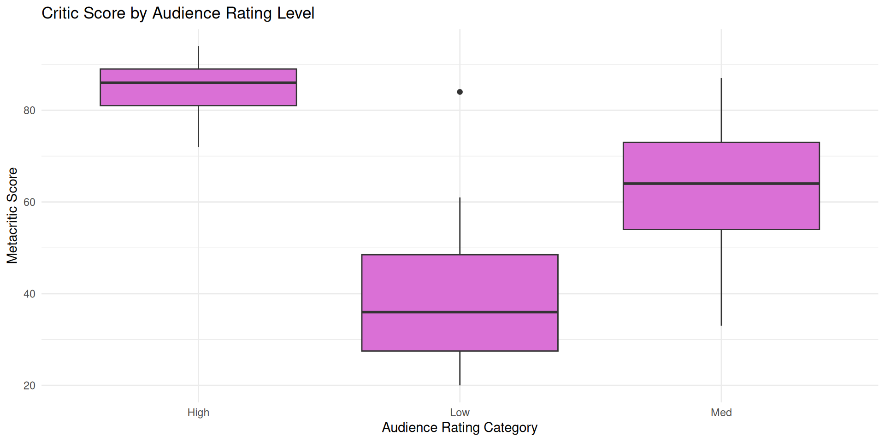
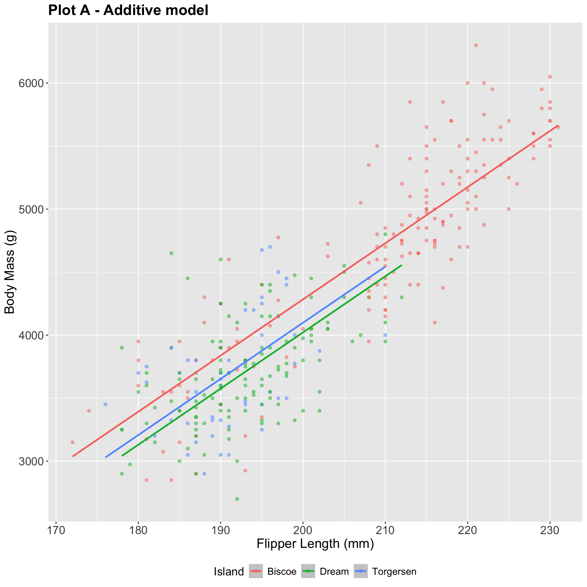
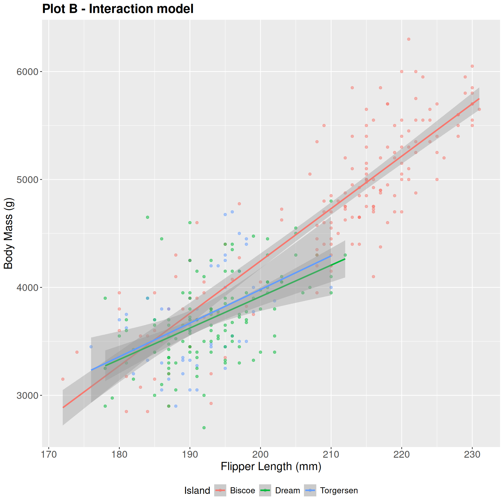

# A tibble: 146 × 3
critics audience imdb_cat
<int> <int> <chr>
1 74 86 High
2 85 80 Med
3 80 90 High
4 18 84 Low
5 14 28 Low
6 63 62 Med
7 42 53 Med
8 86 64 Med
9 99 82 High
10 89 87 High
# ℹ 136 more rowsMultiple Linear Regression
Lecture 15
June 5, 2025
Announcements
Office hours today: 1-3pm; old chem 203
Math warning: logarithms; natural log
Let me know if your Milestone 2 is ready to grade!
Simple Linear Regression
A single quantitative \(x\) and \(y\)
-
Population Model:
\[ Y = \beta_0 + \beta_1 X + \epsilon \]
-
Regression Line:
\[ \hat{Y} = b_0 + b_1 X \]
Regression with Categorical Variables
Regression with Categorical Variables
It’s possible to want to model an outcome based on a categorical predictor:
\[ Y = \beta_0 + \beta_1 X + \epsilon\]
What does this even mean when \(x\) is categorical ???
Movie Example
Example Data
Example Data: Visualization
Let’s just try it…
# A tibble: 3 × 5
term estimate std.error statistic p.value
<chr> <dbl> <dbl> <dbl> <dbl>
1 (Intercept) 85.1 1.73 49.1 2.29e-91
2 imdb_catLow -45.8 2.57 -17.8 3.89e-38
3 imdb_catMed -21.6 2.20 -9.83 9.83e-18What’s going on??
What’s going on?
Variable imdb_cat can take values high, med, or low. We want to model variable audience based on imdb_cat.
We tell R to fit audience ~ imdb_cat … now what?
We get dummy variables!!!
Dummy Variables
| audience | imdb_cat |
|---|---|
| 70 | high |
| 40 | low |
| 50 | med |
| 80 | high |
Dummy Variables
| audience | imdb_cat |
|---|---|
| 70 | high |
| 40 | low |
| 50 | med |
| 80 | high |
| audience | imdb_cat | high | low | med |
|---|---|---|---|---|
| 70 | high | |||
| 40 | low | |||
| 50 | med | |||
| 80 | high |
Important
In a given row, only one of the dummy variables for a given categorical variable can equal 1.
Write the regression output:
Using the categorical variable?
\[ \widehat{audience} = b_0 + b_1 \times imdb\_cat \]
❌ WRONG ❌ 🛑 DON’T DO THIS 🛑 ❗SERIOUSLY ❗💔 Don’t make me sad :( 💔
What will a regression output look like?
Use the dummy variables!!
\[ \widehat{audience} = b_0 + b_1 \times low + b_2 \times med \]
What will a regression output look like?
Use the dummy variables!!
\[ \widehat{audience} = b_0 + b_1 \times low + b_2 \times med \]
Important
All levels except the baseline level will show up in the output. Here, high is the baseline level. You will be able to identify the baseline by looking at the data and the output!
Interpret the output:
\[ \widehat{audience} = b_0 + b_1 \times low + b_2 \times med \]
- (Intercept) \(b_0\) ?
- (Slope) \(b_1\) ?
- (Slope) \(b_2\) ?
Let’s plug in some numbers:
# A tibble: 3 × 5
term estimate std.error statistic p.value
<chr> <dbl> <dbl> <dbl> <dbl>
1 (Intercept) 85.1 1.73 49.1 2.29e-91
2 imdb_catLow -45.8 2.57 -17.8 3.89e-38
3 imdb_catMed -21.6 2.20 -9.83 9.83e-18\[ \widehat{audience} = 85.1 -45.8 \times low -21.6 \times med \]
Interpretation with numbers:
\[ \widehat{audience} = 85.1 -45.8 \times low -21.6 \times med \]
Expected audience score of high IMDB rating movies: 85.1
Movies with low IMDB ratings are expected to have, on average, audience scores 45.8 points lower than movies with high IMDB ratings
Movies with medium IMDB ratings are expected to have, on average, audience scores 21.6 points lower than movies with high IMDB ratings
In General
Generally:
Predicting continuous outcome \(y\) using categorical explanatory variable \(x\) with levels \(cat_0, \ldots cat_L\):
Generally:
Predicting continuous outcome \(y\) using categorical explanatory variable \(x\) with levels \(cat_0, \ldots cat_L\):
\[ \hat{y} = b_0 + b_1 \times cat_1 + b_2 \times cat_2 \ldots + b_L \times cat_L \]
Generally:
Predicting continuous outcome \(y\) using categorical explanatory variable \(x\) with levels \(cat_0, \ldots cat_L\):
\[ \hat{y} = b_0 + b_1 \times cat_1 + b_2 \times cat_2 \ldots + b_L \times cat_L \]
- \(b_0\) : On average, expected \(y\) for an entry of baseline level \(cat_0\)
-
\(b_1\): On average, we expect the \(y\) for an observation of level \(cat_1\) to be be \(b_1\) larger (smaller if negative) than a baseline \(cat_0\) observation
- and so on….
Back to AE-12!
Multiple Predictors
More than 1 predictor variable
So far, we have looked at models with one predictor variable. What if we want multiple?
First, I will show what happens with one of each type of predictor - numerical and categorical
-
We can also have:
More than 2 predictors (might appear in your projects! will appear in real life!)
Different combinations of predictor types (all numerical, all categorical, some of each…)
Approach:
Teach by example
You might see a case in lab that we haven’t seen in class - don’t panic! The same concepts will apply.
Penguins Example
Penguins so far
-
So far, we have seen body mass predicted by:
Flipper length
Island
What if we should use both for prediction??
Penguins Data Visualization
Both of these use flipper_length_mm and island to predict body_mass_g:


The additive model: parallel lines, one for each island
bm_fl_island_fit <- linear_reg() |>
fit(body_mass_g ~ flipper_length_mm + island, data = penguins)
tidy(bm_fl_island_fit)# A tibble: 4 × 5
term estimate std.error statistic p.value
<chr> <dbl> <dbl> <dbl> <dbl>
1 (Intercept) -4625. 392. -11.8 4.29e-27
2 flipper_length_mm 44.5 1.87 23.9 1.65e-74
3 islandDream -262. 55.0 -4.77 2.75e- 6
4 islandTorgersen -185. 70.3 -2.63 8.84e- 3\[ \begin{aligned} \widehat{body~mass} = -4625 &+ 44.5 \times flipper~length \\ &- 262 \times Dream \\ &- 185 \times Torgersen \end{aligned} \]
Where do the three lines come from?
\[ \begin{aligned} \widehat{body~mass} = -4625 &+ 44.5 \times flipper~length \\ &- 262 \times Dream \\ &- 185 \times Torgersen \end{aligned} \]
If penguin is from Biscoe, Dream = 0 and Torgersen = 0:
\[ \begin{aligned} \widehat{body~mass} = -4625 &+ 44.5 \times flipper~length \end{aligned} \]
If penguin is from Dream, Dream = 1 and Torgersen = 0:
\[ \begin{aligned} \widehat{body~mass} = -4887 &+ 44.5 \times flipper~length \end{aligned} \]
If penguin is from Torgersen, Dream = 0 and Torgersen = 1:
\[ \begin{aligned} \widehat{body~mass} = -4810 &+ 44.5 \times flipper~length \end{aligned} \]
How do we interpret this in English?
\[ \begin{aligned} \widehat{body~mass} = -4625 &+ 44.5 \times flipper~length \\ &- 262 \times Dream \\ &- 185 \times Torgersen \end{aligned} \]
- Intercept: We expect, on average, penguins from Biscoe island with 0mm flipper length to weigh -4625 grams
- Slope (flipper length) : Holding island constant, we expect, on average, a 1mm increase in flipper length corresponds to a 44.5g increase in body mass
- Slope (dream) : Holding flipper length constant, we expect, on average, a penguin from the Dream island to be 262g lighter than a penguin from Biscoe island.
- Slope (torgersen) : You try!
Prediction
The interaction model: different slopes for each island
bm_fl_island_int_fit <- linear_reg() |>
fit(body_mass_g ~ flipper_length_mm * island, data = penguins)
tidy(bm_fl_island_int_fit) |> select(term, estimate)# A tibble: 6 × 2
term estimate
<chr> <dbl>
1 (Intercept) -5464.
2 flipper_length_mm 48.5
3 islandDream 3551.
4 islandTorgersen 3218.
5 flipper_length_mm:islandDream -19.4
6 flipper_length_mm:islandTorgersen -17.4\[ \begin{aligned} \widehat{body~mass} = -5464 + 48.5 \times flipper~length &+ 3551 \times Dream \\ &+ 3218 \times Torgersen \\ &- 19.4 \times flipper~length*Dream \\ &- 17.4 \times flipper~length*Torgersen \end{aligned} \]
Where do the three lines come from?
\[ \begin{aligned} \small\widehat{body~mass} = -5464 &+ 48.5 \times flipper~length \\ &+ 3551 \times Dream \\ &+ 3218 \times Torgersen \\ &- 19.4 \times flipper~length*Dream \\ &- 17.4 \times flipper~length*Torgersen \end{aligned} \]
If penguin is from Biscoe, Dream = 0 and Torgersen = 0:
\[ \begin{aligned} \widehat{body~mass} = -5464 &+ 48.5 \times flipper~length \end{aligned} \]
Where do the three lines come from?
\[ \begin{aligned} \small\widehat{body~mass} = -5464 &+ 48.5 \times flipper~length \\ &+ 3551 \times Dream \\ &+ 3218 \times Torgersen \\ &- 19.4 \times flipper~length*Dream \\ &- 17.4 \times flipper~length*Torgersen \end{aligned} \]
If penguin is from Dream, Dream = 1 and Torgersen = 0:
\[ \begin{aligned} \widehat{body~mass} &= (-5464 + 3551) + (48.5-19.4) \times flipper~length\\ &=-1913+29.1\times flipper~length. \end{aligned} \]
Prediction
new_penguin <- tibble(
flipper_length_mm = 200,
island = "Torgersen"
)
predict(bm_fl_island_int_fit, new_data = new_penguin)# A tibble: 1 × 1
.pred
<dbl>
1 3980.\[ \widehat{body~mass} = (-5464 + 3218) + (48.5-17.4) \times 200. \]